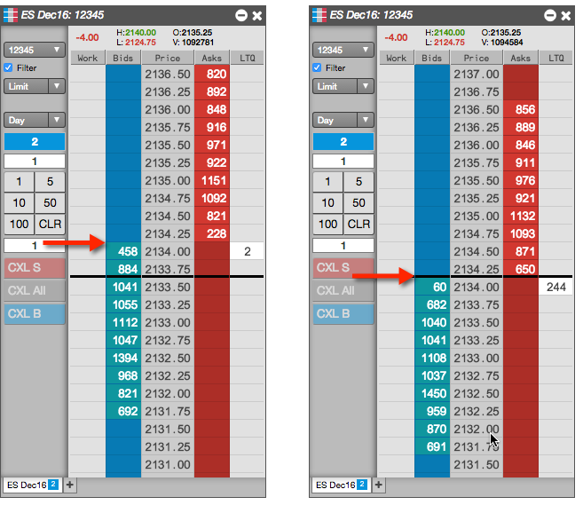

As the best bid and ask quantities move up or down the static price display, you can re-center the market by bringing the center bar back to the midpoint.
To recenter MD Trader:
Place focus in MD Trader and click the spacebar on your keyboard.
Tip: You can also middle click anywhere in MD Trader (excluding buttons and input fields) to recenter the price ladder.
MD Trader recenters the price display to the midpoint of the best bid and ask prices.
